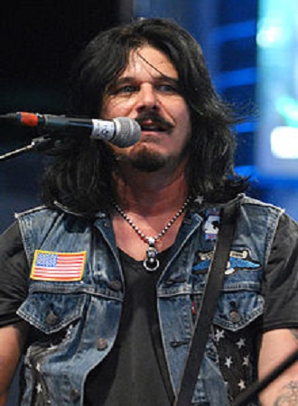
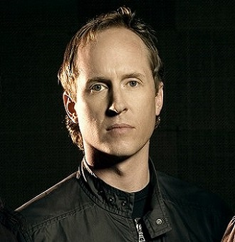
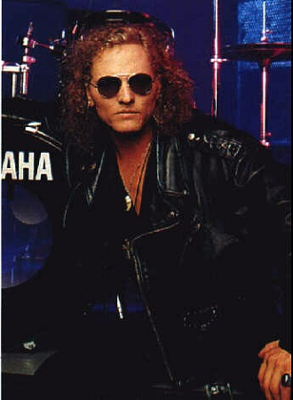

Bryan "Brain" Mantia(родился 4 февраля 1963 в Купертино, штат Калифорния) представляет собой
Bryan "Brain" Mantia(родился 4 февраля 1963 в Купертино, штат Калифорния) представляет собой
современного рок барабанщика. Он играл с такими группами, как Primus, Guns N 'Roses, Praxis,
и Godflesh, и с другими популярными исполнителями, такими как Том Уэйтс, Серж Танкян, Билл Laswell,
Бутси Коллинз, и Buckethead. Он также работал с многочисленными артистами и группами.

Гилберт "Гилби" Кларк (англ. Gilbert "Gilby" Clarke; 17 августа 1962, Кливленд) - американский
гитарист и продюсер, наиболее известный по трехлетнему пребыванию в составе рок-группы Guns N' Roses
в качестве ритм-гитариста, заменив Иззи Стрэдлина в 1991 году во время тура Use Your Illusion.
После ухода из группы Кларк продолжил заниматься сольной карьерой и играл на гитаре
у таких исполнителей, как Slash's Snakepit, Heart, Нэнси Синатра, Кэти Валентайн (из Go-Go's),
MC5 и в сформированной им группе Rock Star Supernova с членами Metallica и Mötley Crüe.
Продюсерская деятельность Кларка включает в себя альбомы групп: L.A. Guns, Bullets and Octane,
The Bronx и Vains of Jenna.

Родился в музыкальной семье (отец руководил Оркестром Диснейленда, а мать была классической пианисткой).
В шестимесячном возрасте оказался на юге Калифорнии.
В возрасте 7-8 лет начал играть на ударных инструментах.
В 12 лет начал профессиональную карьеру (в Оркестре Top 40 Диснейленда).
В 15 лет начал участвовать в турне и записываться.

Мэтью Уильям Сорум (Matthew William Sorum, 19.11.1960) – американский барабанщик и перкуссионист.
Играет преимущественно в стиле хард-рок. Наиболее известен семилетним опытом игры
в группе 'Guns N' Roses'; на данный момент играет на барабанах в составе супергруппы 'Velvet Revolver',
вместе со старыми коллегами по 'Gun's N' Roses' - басистом Даффом МакКаганом и гитаристом Слэшем.
Родился Сорум в Мишшн-Вьеджо, Калифорния. Родители его были английского и норвежского происхождения.
В процессе обучения в старших классах Сорум стал частью местного оркестра – его барабанной секции.
В 1975-ом он вплотную занялся музыкой и вскоре стал известен в окрестностях как достаточно
модный музыкант.
 Робин Финк – известный американский гитарист, выступавший с Nine Inch Nails в Self Destruct-туре
Робин Финк – известный американский гитарист, выступавший с Nine Inch Nails в Self Destruct-туре
и Fragility-туре. В настоящее время Робин является гитаристом американской хард-рок группы Guns N' Roses.
Он также один из немногих музыкантов, игравших в двух разных группах, которые попали в список Ста Величайших Хард-рок Артистов,
составленный телеканалом VH1. Nine Inch Nails в этом списке присвоен #43, а Guns N' Roses – #9.
Робин родился и вырос в Мариетте, штат Джорджия. Он играл в нескольких малоизвестных группах в Атланте.